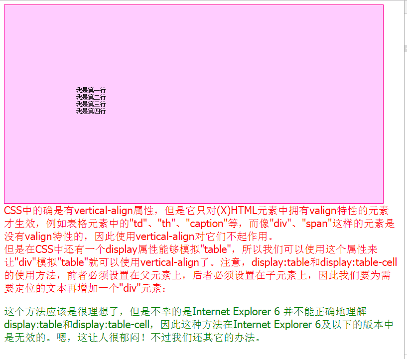
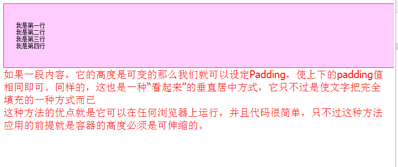
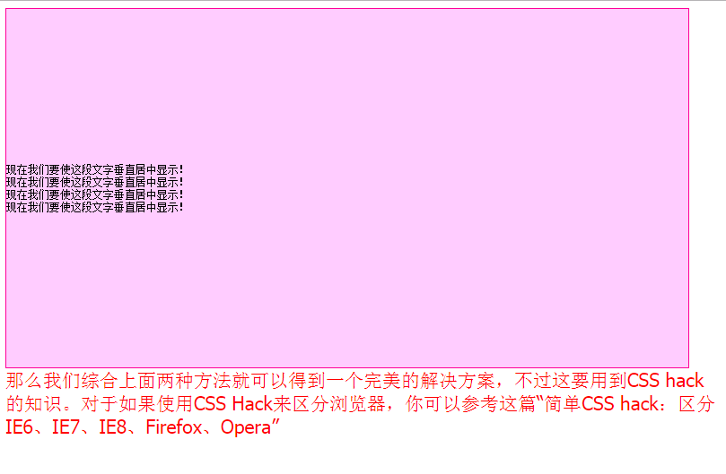

div中各种垂直居中的方法 发表于 2017-07-24 | 分类于 前端 ， HTML ， 实用类 | | 阅读次数 次 前言在前端开发的过程中经常会遇到需要对div中的文字进行垂直居中，下面总结了几种实现的方式。文章底部提供了演示的压缩包。 单行文字div中垂直居中123456789101112131415161718192021222324252627<!DOCTYPE html><html xmlns="http://www.w3.org/1999/xhtml"><head> <title>单行文字在div中垂直居中</title> <meta http-equiv="Content-Type" content="text/html; charset=utf-8" /> <style type="text/css"> body { font-size:12px;font-family:tahoma;} div { height:200px; line-height:200px; border:1px solid #FF0099; background-color:#FFCCFF; text-align:center } span{ font-size: 21px; color: rgb(255, 0, 0); } </style></head><body> <div>看你是不是垂直居中的</div> <span> 如果一个容器中只有一行文字，对它实现居中相对比较简单，我们只需要设置它的实际高度height和所在行的高度line-height相等即可。 </span></body></html> 多行文本固定高度的居中1234567891011121314151617181920212223242526272829303132333435363738394041424344454647484950515253<!DOCTYPE html><html xmlns="http://www.w3.org/1999/xhtml"><head> <title>多行文本固定高度的居中</title> <meta http-equiv="Content-Type" content="text/html; charset=utf-8" /> <style type="text/css"> body { font-size:12px;font-family:tahoma;} div#wrap { height:400px; display:table; } div#content { vertical-align:middle; display:table-cell; border:1px solid #FF0099; background-color:#FFCCFF; width:760px; } span{ font-size: 21px; color: rgb(255, 0, 0); } p{ font-size: 21px; color: green } </style></head><body> <div id="wrap"> <div id="content"> <pre> 我是第一行 我是第二行 我是第三行 我是第四行 </pre> </div> </div> <span> CSS中的确是有vertical-align属性，但是它只对(X)HTML元素中拥有valign特性的元素才生效，例如表格元素中的"td"、"th"、"caption"等，而像"div"、"span"这样的元素是没有valign特性的，因此使用vertical-align对它们不起作用。 </span> <br> <span> 但是在CSS中还有一个display属性能够模拟"table"，所以我们可以使用这个属性来让"div"模拟"table"就可以使用vertical-align了。注意，display:table和display:table-cell的使用方法，前者必须设置在父元素上，后者必须设置在子元素上，因此我们要为需要定位的文本再增加一个"div"元素： </span> <p> 这个方法应该是很理想了，但是不幸的是Internet Explorer 6 并不能正确地理解display:table和display:table-cell，因此这种方法在Internet Explorer 6及以下的版本中是无效的。嗯，这让人很郁闷！不过我们还其它的办法。 </p></body></html>  多行未知高度文字的垂直居中1234567891011121314151617181920212223242526272829303132<!DOCTYPE html><html xmlns="http://www.w3.org/1999/xhtml"><head> <title>多行未知高度文字的垂直居中</title> <meta http-equiv="Content-Type" content="text/html; charset=gb2312" /> <style type="text/css"> body { font-size:12px;font-family:tahoma;} div { padding:25px; border:1px solid #FF0099; background-color:#FFCCFF; width:760px; } span{ font-size: 21px; color: rgb(255, 0, 0); } </style></head><body> <div> <pre>我是第一行我是第二行我是第三行我是第四行</pre> </div> <span> 如果一段内容，它的高度是可变的那么我们就可以设定Padding，使上下的padding值相同即可。同样的，这也是一种“看起来”的垂直居中方式，它只不过是使文字把完全填充的一种方式而已 <br>这种方法的优点就是它可以在任何浏览器上运行，并且代码很简单，只不过这种方法应用的前提就是容器的高度必须是可伸缩的。</span></body></html>  多行文本固定高度的居中（完美解决方案）1234567891011121314151617181920212223242526272829303132333435363738394041424344454647484950<!DOCTYPE html><html><head> <title>（完美解决方案）多行文本固定高度的居中</title> <meta http-equiv="Content-Type" content="text/html; charset=gb2312" /> <style type="text/css"> body { font-size:12px;font-family:tahoma;} div#wrap { display:table; border:1px solid #FF0099; background-color:#FFCCFF; width:760px; height:400px; _position:relative; overflow:hidden; } div#subwrap { vertical-align:middle; display:table-cell; _position:absolute; _top:50%; } div#content { _position:relative; _top:-50%; } span{ font-size: 21px; color: rgb(255, 0, 0); } </style></head><body> <div id="wrap"> <div id="subwrap"> <div id="content"> <pre>现在我们要使这段文字垂直居中显示！ 现在我们要使这段文字垂直居中显示！ 现在我们要使这段文字垂直居中显示！ 现在我们要使这段文字垂直居中显示！ </pre> </div> </div> </div> <span> 那么我们综合上面两种方法就可以得到一个完美的解决方案，不过这要用到CSS hack的知识。对于如果使用CSS Hack来区分浏览器，你可以参考这篇“简单CSS hack：区分IE6、IE7、IE8、Firefox、Opera” </span></body></html>  实例下载点我、实例下载